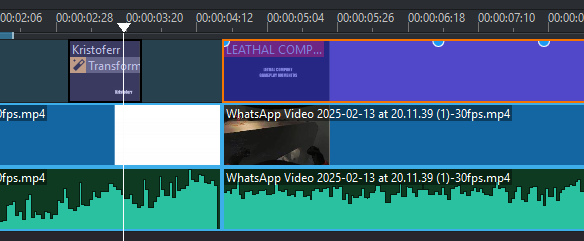
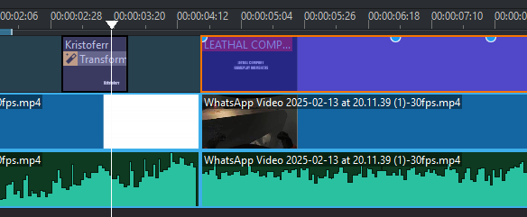

üñ•Ô∏è Software Utilizado
Se utilizó Kdenlive, un editor de video de código abierto que permite una edición avanzada con múltiples efectos, transiciones y control total de keyframes.
üé≠ Tipos de Transiciones y Efectos Aplicados
- ✅ Efecto Charcoal (Carboncillo): Da un estilo artístico resaltando los detalles visuales.
- ✅ Texto con efecto rebote: Se aplicó a los subtítulos y al título del video usando keyframes.
- ✅ Transformación para Titulo: Se usó para ajustar la escala y posición de elementos.
- ✅ Transiciones con glitch: Se añadieron utilizando un efecto de glitch descargado para mejorar la fluidez entre escenas.
 

üé∂ Raz√≥n de la Elecci√≥n de la Banda Sonora
La música y los efectos de sonido fueron seleccionados de forma aleatoria para añadir un toque impredecible y divertido al video. Se usaron sonidos y canciones diversas para resaltar tanto los momentos de tensión como los más caóticos y graciosos, creando una experiencia dinámica y entretenida